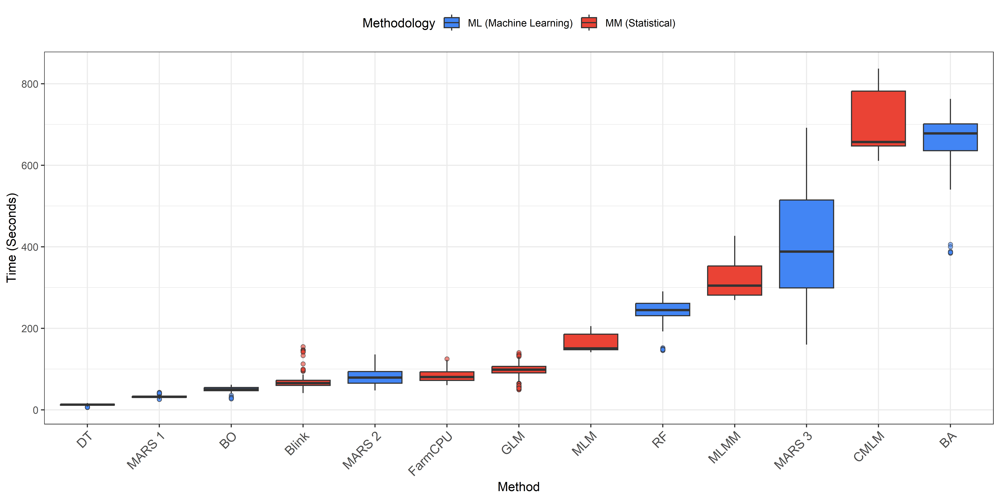

Consolidated Analysis: Performance Metrics (Tutorial)
Costa, W. G.
2025-12-01
Last updated: 2025-12-01
Checks: 6 1
Knit directory:
Importance-of-markers-for-QTL-detection-by-machine-learning-methods/
This reproducible R Markdown analysis was created with workflowr (version 1.7.2). The Checks tab describes the reproducibility checks that were applied when the results were created. The Past versions tab lists the development history.
The R Markdown file has unstaged changes. To know which version of
the R Markdown file created these results, you’ll want to first commit
it to the Git repo. If you’re still working on the analysis, you can
ignore this warning. When you’re finished, you can run
wflow_publish to commit the R Markdown file and build the
HTML.
Great job! The global environment was empty. Objects defined in the global environment can affect the analysis in your R Markdown file in unknown ways. For reproduciblity it’s best to always run the code in an empty environment.
The command set.seed(20221222) was run prior to running
the code in the R Markdown file. Setting a seed ensures that any results
that rely on randomness, e.g. subsampling or permutations, are
reproducible.
Great job! Recording the operating system, R version, and package versions is critical for reproducibility.
Nice! There were no cached chunks for this analysis, so you can be confident that you successfully produced the results during this run.
Great job! Using relative paths to the files within your workflowr project makes it easier to run your code on other machines.
Great! You are using Git for version control. Tracking code development and connecting the code version to the results is critical for reproducibility.
The results in this page were generated with repository version b25f3a6. See the Past versions tab to see a history of the changes made to the R Markdown and HTML files.
Note that you need to be careful to ensure that all relevant files for
the analysis have been committed to Git prior to generating the results
(you can use wflow_publish or
wflow_git_commit). workflowr only checks the R Markdown
file, but you know if there are other scripts or data files that it
depends on. Below is the status of the Git repository when the results
were generated:
Ignored files:
Ignored: .Rproj.user/
Ignored: analysis/GWAS.Rmd
Ignored: analysis/figure/
Ignored: analysis/gwas-GLM.Rmd
Ignored: output/DP_heatmap.tiff
Ignored: output/F1_Score_heatmap.tiff
Ignored: output/FP_heatmap.tiff
Ignored: output/Precision_heatmap.tiff
Ignored: output/Runtime_Comparison.tiff
Ignored: output/Specificity_heatmap.tiff
Ignored: output/mod.rda
Untracked files:
Untracked: output/Runtime_Comparison.png
Untracked: output/Runtime_Summary_Table.csv
Untracked: output/gwas_cv/
Untracked: output/gwas_multimodel/
Untracked: output/ml_cv/
Unstaged changes:
Modified: analysis/consolidated_analysis.Rmd
Modified: analysis/genomic_prediction.Rmd
Modified: output/DP_heatmap.png
Modified: output/F1_Score_heatmap.png
Modified: output/FP_heatmap.png
Modified: output/Precision_heatmap.png
Modified: output/Specificity_heatmap.png
Note that any generated files, e.g. HTML, png, CSS, etc., are not included in this status report because it is ok for generated content to have uncommitted changes.
These are the previous versions of the repository in which changes were
made to the R Markdown (analysis/consolidated_analysis.Rmd)
and HTML (docs/consolidated_analysis.html) files. If you’ve
configured a remote Git repository (see ?wflow_git_remote),
click on the hyperlinks in the table below to view the files as they
were in that past version.
| File | Version | Author | Date | Message |
|---|---|---|---|---|
| Rmd | 4c1bb30 | WevertonGomesCosta | 2025-12-01 | add consolidated_nalysis and genomic_prediction scripts .rmd and html |
| html | 4c1bb30 | WevertonGomesCosta | 2025-12-01 | add consolidated_nalysis and genomic_prediction scripts .rmd and html |
1. Introduction and Configuration
This document details the computational pipeline designed to benchmark Genome-Wide Association Studies (GWAS) against Machine Learning (ML) methods. The process is divided into explicit steps to ensure reproducibility.
The goal is to integrate results from multiple models, standardize their importance scores, and calculate key performance metrics (Detection Power, Precision, FPR, Specificity, and F1 Score) across 10 replicates and 50 cross-validation folds.
Load Packages
library(tidyverse) # Data manipulation (dplyr) and visualization (ggplot2)
library(scales) # Axis scaling and formatting
library(patchwork) # Composition of multi-panel plots
library(stringr) # String manipulation
library(ggnewscale) # Multiple color scales in ggplot2
library(ggrepel) # Improved text labels in ggplot2
library(ggthemes) # Additional ggplot2 themes
library(DT) # Interactive tables2. Data Importation
In this step, we load the raw result files. We distinguish between Machine Learning (ML) and GWAS files and apply column standardization immediately upon reading. This is crucial because different software outputs may use varying column names (e.g., “SNP” vs. “Marker”, “p.value” vs. “Importance”).
2.1. Load Machine Learning Data
Machine Learning models (Random Forest, MARS, etc.) output Importance Scores (e.g., Gini Impurity, RSS reduction). Since these scores are on different scales (some range from 0-100, others are unbounded), we must load and normalize them.
Process: 1. Identify File: We
target the consolidated ML results file generated in the previous
script. 2. Standardize: We rename columns to a common
format (variable, replicate,
marker, overall). 3.
Normalize: We apply a Min-Max scaling (0 to 10) within
each fold/replicate to make scores comparable across different
algorithms.
# 1. Define the path to the consolidated ML file
# This file was created in the 'genomic_prediction.Rmd' script
ml_files <- "output/ml_cv/ML_Results_Importance_CONSOLIDATED.csv"
# 2. Reading and Cleaning (Explicit Process)
# We use map_dfr to read the file(s) and apply a consistent cleaning function
ml_data <- map_dfr(ml_files, function(f) {
if(!file.exists(f)) return(data.frame())
# Read CSV
df <- read.csv(f)
colnames(df) <- tolower(colnames(df)) # Standardize names to lowercase to avoid case-sensitivity issues
# Explicitly Select and Rename columns
# This mapping ensures that 'var', 'Variable', or 'TRAIT' all become 'variable'
df %>%
rename(
variable = any_of(c("var", "variable")),
replicate = any_of(c("rep", "replicate")),
marker = any_of(c("marker", "marker_idx", "snp")),
overall = any_of(c("overall", "importance", "score")),
fold = any_of(c("fold")),
method = any_of(c("method", "model"))
) %>%
mutate(
# Ensure numeric types for merging
variable = as.numeric(variable),
# robustly clean marker names (e.g., remove "M" prefix if present)
marker = as.numeric(str_replace_all(as.character(marker), "[^0-9]", "")),
replicate = as.numeric(replicate),
fold = as.numeric(fold),
overall = as.numeric(overall),
method = as.character(method),
type = "ML" # Tag to distinguish from GWAS later
) %>%
select(variable, method, marker, replicate, fold, overall, type)
})
# 3. Normalization (Rescale 0-10) within each Fold
# Important: Comparison is only valid if scores share a relative scale.
# We rescale the importance so the maximum importance in any fold is 10.
ml_data <- ml_data %>%
group_by(variable, method, replicate, fold) %>%
mutate(
overall = scales::rescale(overall, to = c(0, 10), finite = FALSE)) %>%
ungroup()
head(ml_data)# A tibble: 6 × 7
variable method marker replicate fold overall type
<dbl> <chr> <dbl> <dbl> <dbl> <dbl> <chr>
1 1 BA 1 1 1 0.815 ML
2 1 BA 2 1 1 0.440 ML
3 1 BA 3 1 1 0.632 ML
4 1 BA 4 1 1 0.534 ML
5 1 BA 5 1 1 0.299 ML
6 1 BA 6 1 1 0.435 ML 2.2. Load GWAS Data
GWAS models (GLM, FarmCPU, Blink) output P-values. These represent the statistical probability of the association being random.
Process:
- Identify File: We target the consolidated GWAS results file generated in the GAPIT script.
- Standardize: Similar to ML, we standardize column names.
- No Normalization: Unlike ML scores, P-values (transformed to \(-log_{10}(P)\)) have a standard statistical interpretation and do not require rescaling.
# Path to the already unified file from 'models_gapit_gwas.Rmd'
gwas_file <- "output/gwas_cv/GWAS_Results_Importance_CONSOLIDATED.csv"
if (file.exists(gwas_file)) {
# 1. Read single file
df_raw <- read.csv(gwas_file)
# 2. Standardize column names (to lowercase)
colnames(df_raw) <- tolower(colnames(df_raw))
# 3. Cleaning and Selection
gwas_data <- df_raw %>%
rename(
# Map file columns (Variable, Model...) to standard pattern (variable, method...)
variable = any_of(c("variable", "var")),
replicate = any_of(c("replicate", "rep")),
marker = any_of(c("marker", "snp")),
overall = any_of(c("overall", "p.value", "score")),
fold = any_of(c("fold")),
method = any_of(c("model", "method"))
) %>%
mutate(
# Robust type conversion
variable = as.numeric(variable),
# Remove non-numeric characters from marker (e.g., "V1" -> 1)
marker = as.numeric(str_replace_all(as.character(marker), "[^0-9]", "")),
replicate = as.numeric(replicate),
fold = as.numeric(fold),
overall = as.numeric(overall),
method = as.character(method),
type = "MM" # Tag to differentiate later
) %>%
# Safety filter to remove corrupted rows (NAs)
filter(!is.na(marker), !is.na(variable)) %>%
select(variable, method, marker, replicate, fold, overall, type)
cat("GWAS data loaded successfully.\n")
cat("Total records:", nrow(gwas_data), "\n")
} else {
warning("File 'GWAS_Results_Importance_CONSOLIDATED.csv' not found in output/gwas_cv/.")
gwas_data <- data.frame()
}GWAS data loaded successfully.
Total records: 31518600 variable method marker replicate fold overall type
1 1 Blink.Kansas 2 1 1 0.09728216 MM
2 1 Blink.Kansas 1 1 1 0.08188228 MM
3 1 Blink.Kansas 3 1 1 0.05313143 MM
4 1 Blink.Kansas 4 1 1 0.00163415 MM
5 1 Blink.Kansas 5 1 1 0.03857520 MM
6 1 Blink.Kansas 6 1 1 0.08115917 MM2.3. Unification
Finally, we stack the two datasets vertically. This creates a master dataset containing every tested marker, for every method, variable, and replicate, ready for the comparative analysis.
# Combine ML and GWAS dataframes
all_data <- bind_rows(ml_data, gwas_data)
cat("Total consolidated records:", nrow(all_data), "\n")Total consolidated records: 49366520 3. Ground Truth Definition (True QTLs)
To evaluate the methods, we must define the locations of the true simulated QTLs. We load the base simulation file and expand it to cover all 18 variables, representing different heritability scenarios (\(h^2 = 0.3, 0.5, 0.8\)).
We create two reference structures: 1. Flat Map
(region_map): Used for calculating
Precision and Specificity. Overlapping
windows are merged to prevent double-counting markers as “False
Positives”. 2. ID Reference
(qtl_reference): Used for calculating
Detection Power. Preserves unique QTL IDs to determine
how many distinct genetic signals were successfully detected.
# Load original file (Contains variables 1 to 6)
if(file.exists("data/snpsOfInterest.RData")) {
load("data/snpsOfInterest.RData")
} else {
stop("File 'snpsOfInterest.RData' not found in data/ folder.")
}
# Expansion to include different heritability scenarios
# Variables 1-6 (h2=0.3)
# Variables 7-12 (h2=0.5) - Shifted Copy (+6)
# Variables 13-18 (h2=0.8) - Shifted Copy (+12)
snpsOfInterest <- snpsOfInterest %>%
bind_rows(snpsOfInterest %>% mutate(variable = variable + 6)) %>%
bind_rows(snpsOfInterest %>% mutate(variable = variable + 12))
# Window Parameters
distance <- 5
total_markers_genotype <- 4010
# --- A. Flat Map (For Precision/FP/TN) ---
# We use distinct() to merge overlapping windows into a single boolean "target" region
region_map <- snpsOfInterest %>%
rowwise() %>%
mutate(marker = list(seq(marker - distance, marker + distance))) %>%
ungroup() %>%
unnest(cols = marker) %>%
select(variable, marker) %>%
distinct() %>% # REMOVE DUPLICATE markers (merges overlaps)
mutate(
marker = as.numeric(marker),
is_in_region = TRUE
)
head(region_map)# A tibble: 6 × 3
variable marker is_in_region
<dbl> <dbl> <lgl>
1 1 196 TRUE
2 1 197 TRUE
3 1 198 TRUE
4 1 199 TRUE
5 1 200 TRUE
6 1 201 TRUE # --- B. Reference with ID (For Detection Power) ---
# We keep the QTL_ID to count how many "unique QTLs" were found (Hit Rate)
qtl_reference <- snpsOfInterest %>%
mutate(QTL_ID = paste0("QTL_", variable, "_", marker)) %>%
rowwise() %>%
mutate(marker = list(seq(marker - distance, marker + distance))) %>%
ungroup() %>%
unnest(cols = marker) %>%
select(variable, marker, QTL_ID)
head(qtl_reference)# A tibble: 6 × 3
variable marker QTL_ID
<dbl> <int> <chr>
1 1 196 QTL_1_201
2 1 197 QTL_1_201
3 1 198 QTL_1_201
4 1 199 QTL_1_201
5 1 200 QTL_1_201
6 1 201 QTL_1_201# --- C. Denominators (For Rates) ---
truth_metadata <- snpsOfInterest %>%
group_by(variable) %>%
summarise(total_QTLs_real = n_distinct(marker), .groups = "drop")
markers_in_target <- region_map %>%
group_by(variable) %>%
summarise(total_target_markers = n_distinct(marker))
truth_metadata <- left_join(truth_metadata, markers_in_target, by = "variable") %>%
mutate(total_noise_markers = total_markers_genotype - total_target_markers)
head(truth_metadata)# A tibble: 6 × 4
variable total_QTLs_real total_target_markers total_noise_markers
<dbl> <int> <int> <dbl>
1 1 8 88 3922
2 2 40 440 3570
3 3 80 880 3130
4 4 120 1320 2690
5 5 240 2640 1370
6 6 480 2920 10904. Marker Classification
In this step, we apply specific selection thresholds to classify markers as “Significant” (Selected) or “Not Significant”.
- GWAS: We apply the rigorous Bonferroni correction (\(-\log_{10}(0.05/M)\)) to control the family-wise error rate.
- Machine Learning: We use an empirical threshold based on the mean importance score within each replicate. Markers with importance above the mean are selected.
Finally, we cross-reference the selected markers with the
region_map to categorize them into the Confusion Matrix
classes: True Positives (TP), False Positives (FP), False Negatives
(FN), and True Negatives (TN).
# Identify GWAS methods from the data
gwas_methods <- unique(gwas_data$method)
# Calculate Thresholds and Selection Status
classified_data <- all_data %>%
group_by(method, variable, replicate, fold) %>%
mutate(
threshold_ml = mean(overall, na.rm=TRUE),
threshold_gwas = -log10(0.05/total_markers_genotype),
is_selected = case_when(
# GWAS Criteria: > Bonferroni
method %in% gwas_methods & overall > threshold_gwas ~ TRUE,
# ML Criteria: > Mean Importance
!(method %in% gwas_methods) & overall > threshold_ml ~ TRUE,
TRUE ~ FALSE
)
) %>%
ungroup() %>%
# Join with Flat Map (Left Join to retain all tested markers)
left_join(region_map, by = c("variable", "marker")) %>%
mutate(
# Markers not found in region_map are "Noise" (FALSE)
is_in_region = replace_na(is_in_region, FALSE),
# Final Classification (Confusion Matrix)
classification = case_when(
is_selected & is_in_region ~ "TP", # True Positive (Hit)
is_selected & !is_in_region ~ "FP", # False Positive (Noise Selection)
!is_selected & is_in_region ~ "FN", # False Negative (Missed QTL)
!is_selected & !is_in_region ~ "TN" # True Negative (Correct Rejection)
)
)
head(classified_data)# A tibble: 6 × 12
variable method marker replicate fold overall type threshold_ml
<dbl> <chr> <dbl> <dbl> <dbl> <dbl> <chr> <dbl>
1 10 BA 1 1 1 0.485 ML 0.254
2 10 BA 2 1 1 0.319 ML 0.254
3 10 BA 3 1 1 0.201 ML 0.254
4 10 BA 4 1 1 0.147 ML 0.254
5 10 BA 5 1 1 0.133 ML 0.254
6 10 BA 6 1 1 0.158 ML 0.254
# ℹ 4 more variables: threshold_gwas <dbl>, is_selected <lgl>,
# is_in_region <lgl>, classification <chr>5. Calculation of Metrics by Replicate
In this step, we calculate the raw counts of “hits” and “misses” for each cross-validation fold.
5.1. QTL Hits (For Detection Power and Precision)
We use the qtl_reference table (which contains unique
QTL IDs) to determine how many distinct QTLs were “tagged” by the
selected markers.
hits_calc <- classified_data %>%
filter(is_selected) %>%
# relationship = "many-to-many" is required because QTL windows may overlap
inner_join(qtl_reference, by = c("variable", "marker"), relationship = "many-to-many") %>%
group_by(variable, method, replicate, fold) %>%
summarise(acerto_qtl = n_distinct(QTL_ID), .groups = "drop")
head(hits_calc)# A tibble: 6 × 5
variable method replicate fold acerto_qtl
<dbl> <chr> <dbl> <dbl> <int>
1 7 BA 1 1 8
2 7 BA 1 2 8
3 7 BA 1 3 8
4 7 BA 1 4 8
5 7 BA 1 5 8
6 7 BA 2 1 85.2. Error Statistics (FP) and Rejections (TN)
We summarize the marker-level classification to count False Positives (Selection of Noise) and True Negatives (Correct Rejection of Noise).
[Image of confusion matrix precision recall]
marker_stats <- classified_data %>%
group_by(variable, method, replicate, fold) %>%
summarise(
# FP_markers = Error (Selected noise marker)
FP_markers = sum(classification == "FP"),
# TN_markers = Rejection Hit (Correctly ignored noise marker)
TN_markers = sum(classification == "TN"),
.groups = "drop"
)
head(marker_stats)# A tibble: 6 × 6
variable method replicate fold FP_markers TN_markers
<dbl> <chr> <dbl> <dbl> <int> <int>
1 7 BA 1 1 590 3332
2 7 BA 1 2 435 3487
3 7 BA 1 3 515 3407
4 7 BA 1 4 557 3365
5 7 BA 1 5 524 3398
6 7 BA 2 1 592 33306. Consolidation and Calculation of Means
In this step, we merge all classification data and calculate the performance metrics for each replicate. Subsequently, we aggregate the results to obtain the Mean (\(\mu\)) and Standard Deviation (\(\sigma\)) across the 10 replicates.
# Create skeleton to ensure methods with zero selections are included in the stats
skeleton <- classified_data %>% distinct(variable, method, replicate, fold)
# Merge all components
coinc_raw <- skeleton %>%
left_join(truth_metadata, by = "variable") %>%
left_join(hits_calc, by = c("variable", "method", "replicate", "fold")) %>%
left_join(marker_stats, by = c("variable", "method", "replicate", "fold")) %>%
mutate(
# Replace NAs with 0 (for methods that selected nothing)
acerto_qtl = replace_na(acerto_qtl, 0),
FP_markers = replace_na(FP_markers, 0),
TN_markers = replace_na(TN_markers, 0),
# --- METRIC FORMULAS ---
# 1. Detection Power (DP)
# (Unique QTLs Found / Total Real QTLs) * 100
DP = (acerto_qtl / total_QTLs_real) * 100,
# 2. Precision
# (True Hits / Total Selected Signals) * 100
Precision = ifelse((acerto_qtl + FP_markers) == 0, 0,
(acerto_qtl / (acerto_qtl + FP_markers)) * 100),
# 3. False Positive Rate (FP Rate)
# (False Positives / Total Noise Markers) * 100
FP_Rate = ifelse(total_noise_markers == 0, 0,
(FP_markers / total_noise_markers) * 100),
# 4. Specificity
# (True Negatives / Total Noise Markers) * 100
Specificity = ifelse(total_noise_markers == 0, 0,
((total_noise_markers - FP_markers) / total_noise_markers) * 100),
# 5. F1 Score (Harmonic Mean of DP and Precision)
F1_Score = ifelse((DP + Precision) == 0, 0,
2 * ((DP * Precision) / (DP + Precision)))
)
head(coinc_raw)# A tibble: 6 × 15
variable method replicate fold total_QTLs_real total_target_markers
<dbl> <chr> <dbl> <dbl> <int> <int>
1 10 BA 1 1 120 1320
2 10 BA 1 2 120 1320
3 10 BA 1 3 120 1320
4 10 BA 1 4 120 1320
5 10 BA 1 5 120 1320
6 11 BA 1 1 240 2640
# ℹ 9 more variables: total_noise_markers <dbl>, acerto_qtl <int>,
# FP_markers <int>, TN_markers <int>, DP <dbl>, Precision <dbl>,
# FP_Rate <dbl>, Specificity <dbl>, F1_Score <dbl># Calculate Means and Standard Deviations across replicates
coinc_summary <- coinc_raw %>%
group_by(variable, method) %>%
summarise(
DP_mean = mean(DP, na.rm=TRUE),
DP_sd = sd(DP, na.rm=TRUE),
Precision_mean = mean(Precision, na.rm=TRUE),
Precision_sd = sd(Precision, na.rm=TRUE),
FP_mean = mean(FP_Rate, na.rm=TRUE),
FP_sd = sd(FP_Rate, na.rm=TRUE),
Specificity_mean = mean(Specificity, na.rm=TRUE),
Specificity_sd = sd(Specificity, na.rm=TRUE),
F1_Score_mean = mean(F1_Score, na.rm=TRUE),
F1_Score_sd = sd(F1_Score, na.rm=TRUE),
.groups = "drop"
)
head(coinc_summary)# A tibble: 6 × 12
variable method DP_mean DP_sd Precision_mean Precision_sd FP_mean FP_sd
<dbl> <chr> <dbl> <dbl> <dbl> <dbl> <dbl> <dbl>
1 7 BA 100 0 1.54 0.154 13.1 1.25
2 7 BO 100 0 2.29 0.164 8.73 0.597
3 7 Blink.Kansas 50 13.8 63.3 19.6 0.0612 0.0349
4 7 Blink.NYC 17.5 6.19 1.90 0.484 1.85 0.375
5 7 CMLM 0 0 0 0 0 0
6 7 DT 95 10.1 21.2 5.57 0.770 0.212
# ℹ 4 more variables: Specificity_mean <dbl>, Specificity_sd <dbl>,
# F1_Score_mean <dbl>, F1_Score_sd <dbl># Add Metadata and Classification (MM vs ML)
coinc_plot <- coinc_summary %>%
mutate(
# Classify Heritability
herd = case_when(
variable %in% 1:6 ~ "h2 = 0.3",
variable %in% 7:12 ~ "h2 = 0.5",
variable %in% 13:18 ~ "h2 = 0.8",
TRUE ~ "Unknown"
),
# Classify Number of Genes
ngenes = case_when(
variable %in% c(1, 7, 13) ~ 8,
variable %in% c(2, 8, 14) ~ 40,
variable %in% c(3, 9, 15) ~ 80,
variable %in% c(4, 10, 16) ~ 120,
variable %in% c(5, 11, 17) ~ 240,
variable %in% c(6, 12, 18) ~ 480,
TRUE ~ 999
),
# CORRECTION: Classify GAPIT models as "MM" (Mixed/Statistical Models)
methodology = ifelse(method %in% gwas_methods, "MM", "ML")
)
# Pre-format plot labels (Mean ± SD)
coinc_plot <- coinc_plot %>%
mutate(
label_dp = paste0(round(DP_mean, 1), " ± ", round(DP_sd, 1)),
label_prec = paste0(round(Precision_mean, 1), " ± ", round(Precision_sd, 1)),
label_fp = paste0(round(FP_mean, 2), " ± ", round(FP_sd, 2)),
label_spec = paste0(round(Specificity_mean, 1), " ± ", round(Specificity_sd, 1)),
label_f1 = paste0(round(F1_Score_mean, 1), " ± ", round(F1_Score_sd, 1)),
# Factor Ordering for Plotting
method = factor(method, levels = rev(sort(unique(method)))),
ngenes_f = factor(ngenes, levels = sort(unique(ngenes)))
)
head(coinc_plot[,15:20])# A tibble: 6 × 6
methodology label_dp label_prec label_fp label_spec label_f1
<chr> <chr> <chr> <chr> <chr> <chr>
1 ML 100 ± 0 1.5 ± 0.2 13.13 ± 1.25 86.9 ± 1.2 3 ± 0.3
2 ML 100 ± 0 2.3 ± 0.2 8.73 ± 0.6 91.3 ± 0.6 4.5 ± 0.3
3 MM 50 ± 13.8 63.3 ± 19.6 0.06 ± 0.03 99.9 ± 0 55.7 ± 16.1
4 MM 17.5 ± 6.2 1.9 ± 0.5 1.85 ± 0.38 98.2 ± 0.4 3.4 ± 0.9
5 MM 0 ± 0 0 ± 0 0 ± 0 100 ± 0 0 ± 0
6 ML 95 ± 10.1 21.2 ± 5.6 0.77 ± 0.21 99.2 ± 0.2 34.5 ± 8 7. Visualization (Heatmaps)
Below, we generate comparative heatmaps between Mixed Models (MM) and Machine Learning (ML).
7.1. Detection Power (DP)
# Plot MM (Statistical Models)
p1 <- coinc_plot %>% filter(methodology == "MM") %>%
ggplot(aes(x = ngenes_f, y = method, fill = DP_mean)) +
geom_tile(color = "black") +
geom_text(aes(label = label_dp), color = "black", size = 2.8) +
scale_fill_gradient2(low = "white", mid = "yellow", high = "red", midpoint = 50, limits = c(0, 100), name = "DP (%)") +
facet_grid(herd ~ ., scales = "free", space = "free") +
labs(title = "Mixed Models (MM)", x = NULL, y = NULL) +
theme_bw() +
theme(legend.position = "none", axis.text.y = element_text(size = 10))
# Plot ML (Machine Learning)
p2 <- coinc_plot %>% filter(methodology == "ML") %>%
ggplot(aes(x = ngenes_f, y = method, fill = DP_mean)) +
geom_tile(color = "black") +
geom_text(aes(label = label_dp), color = "black", size = 2.8) +
scale_fill_gradient2(low = "white", mid = "yellow", high = "red", midpoint = 50, limits = c(0, 100), name = "DP (%)") +
facet_grid(herd ~ ., scales = "free", space = "free") +
labs(title = "Machine Learning (ML)", x = NULL, y = NULL) +
theme_bw() +
theme(axis.text.y = element_text(size = 10), axis.ticks.y = element_line())
final_dp <- (p1 | p2) + plot_annotation(title = "Detection Power", theme = theme(plot.title = element_text(hjust = 0.5, face="bold", size=16)))
print(final_dp)
| Version | Author | Date |
|---|---|---|
| 4c1bb30 | WevertonGomesCosta | 2025-12-01 |
7.2. Precision
p1 <- coinc_plot %>% filter(methodology == "MM") %>%
ggplot(aes(x = ngenes_f, y = method, fill = Precision_mean)) +
geom_tile(color = "black") +
geom_text(aes(label = label_prec), color = "black", size = 2.8) +
scale_fill_gradient2(low = "white", mid = "yellow", high = "red", midpoint = 50, limits = c(0, 100), name = "Precision (%)") +
facet_grid(herd ~ ., scales = "free", space = "free") +
labs(title = "Mixed Models (MM)", x = NULL, y = NULL) +
theme_bw() + theme(legend.position = "none", axis.text.y = element_text(size = 10))
p2 <- coinc_plot %>% filter(methodology == "ML") %>%
ggplot(aes(x = ngenes_f, y = method, fill = Precision_mean)) +
geom_tile(color = "black") +
geom_text(aes(label = label_prec), color = "black", size = 2.8) +
scale_fill_gradient2(low = "white", mid = "yellow", high = "red", midpoint = 50, limits = c(0, 100), name = "Precision (%)") +
facet_grid(herd ~ ., scales = "free", space = "free") +
labs(title = "Machine Learning (ML)", x = NULL, y = NULL) +
theme_bw() + theme(axis.text.y = element_text(size = 10), axis.ticks.y = element_line())
final_prec <- (p1 | p2) + plot_annotation(title = "Precision", theme = theme(plot.title = element_text(hjust = 0.5, face="bold", size=16)))
print(final_prec)
| Version | Author | Date |
|---|---|---|
| 4c1bb30 | WevertonGomesCosta | 2025-12-01 |
7.3. False Positive Rate (FPR)
p1 <- coinc_plot %>% filter(methodology == "MM") %>%
ggplot(aes(x = ngenes_f, y = method, fill = FP_mean)) +
geom_tile(color = "black") +
geom_text(aes(label = label_fp), color = "black", size = 2.8) +
scale_fill_gradient2(low = "white", mid = "yellow", high = "red", midpoint = 50, limits = c(0, 100), name = "FPR (%)") +
facet_grid(herd ~ ., scales = "free", space = "free") +
labs(title = "Mixed Models (MM)", x = NULL, y = NULL) +
theme_bw() + theme(legend.position = "none", axis.text.y = element_text(size = 10))
p2 <- coinc_plot %>% filter(methodology == "ML") %>%
ggplot(aes(x = ngenes_f, y = method, fill = FP_mean)) +
geom_tile(color = "black") +
geom_text(aes(label = label_fp), color = "black", size = 2.8) +
scale_fill_gradient2(low = "white", mid = "yellow", high = "red", midpoint = 50, limits = c(0, 100), name = "FPR (%)") +
facet_grid(herd ~ ., scales = "free", space = "free") +
labs(title = "Machine Learning (ML)", x = NULL, y = NULL) +
theme_bw() + theme(axis.text.y = element_text(size = 10), axis.ticks.y = element_line())
final_fp <- (p1 | p2) + plot_annotation(title = "False Positive Rate (FPR)", theme = theme(plot.title = element_text(hjust = 0.5, face="bold", size=16)))
print(final_fp)
| Version | Author | Date |
|---|---|---|
| 4c1bb30 | WevertonGomesCosta | 2025-12-01 |
7.4. Specificity
p1 <- coinc_plot %>% filter(methodology == "MM") %>%
ggplot(aes(x = ngenes_f, y = method, fill = Specificity_mean)) +
geom_tile(color = "black") +
geom_text(aes(label = label_spec), color = "black", size = 2.8) +
scale_fill_gradient2(low = "white", mid = "yellow", high = "red", midpoint = 50, limits = c(0, 100), name = "Specificity (%)") +
facet_grid(herd ~ ., scales = "free", space = "free") +
labs(title = "Mixed Models (MM)", x = NULL, y = NULL) +
theme_bw() + theme(legend.position = "none", axis.text.y = element_text(size = 10))
p2 <- coinc_plot %>% filter(methodology == "ML") %>%
ggplot(aes(x = ngenes_f, y = method, fill = Specificity_mean)) +
geom_tile(color = "black") +
geom_text(aes(label = label_spec), color = "black", size = 2.8) +
scale_fill_gradient2(low = "white", mid = "yellow", high = "red", midpoint = 50, limits = c(0, 100), name = "Specificity (%)") +
facet_grid(herd ~ ., scales = "free", space = "free") +
labs(title = "Machine Learning (ML)", x = NULL, y = NULL) +
theme_bw() + theme(axis.text.y = element_text(size = 10), axis.ticks.y = element_line())
final_spec <- (p1 | p2) + plot_annotation(title = "Specificity", theme = theme(plot.title = element_text(hjust = 0.5, face="bold", size=16)))
print(final_spec)
| Version | Author | Date |
|---|---|---|
| 4c1bb30 | WevertonGomesCosta | 2025-12-01 |
7.5. F1 Score
p1 <- coinc_plot %>% filter(methodology == "MM") %>%
ggplot(aes(x = ngenes_f, y = method, fill = F1_Score_mean)) +
geom_tile(color = "black") +
geom_text(aes(label = label_f1), color = "black", size = 2.8) +
scale_fill_gradient2(low = "white", mid = "yellow", high = "red", midpoint = 50, limits = c(0, 100), name = "F1 Score") +
facet_grid(herd ~ ., scales = "free", space = "free") +
labs(title = "Mixed Models (MM)", x = NULL, y = NULL) +
theme_bw() + theme(legend.position = "none", axis.text.y = element_text(size = 10))
p2 <- coinc_plot %>% filter(methodology == "ML") %>%
ggplot(aes(x = ngenes_f, y = method, fill = F1_Score_mean)) +
geom_tile(color = "black") +
geom_text(aes(label = label_f1), color = "black", size = 2.8) +
scale_fill_gradient2(low = "white", mid = "yellow", high = "red", midpoint = 50, limits = c(0, 100), name = "F1 Score") +
facet_grid(herd ~ ., scales = "free", space = "free") +
labs(title = "Machine Learning (ML)", x = NULL, y = NULL) +
theme_bw() + theme(axis.text.y = element_text(size = 10), axis.ticks.y = element_line())
final_f1 <- (p1 | p2) + plot_annotation(title = "F1 Score (Harmonic Mean)", theme = theme(plot.title = element_text(hjust = 0.5, face="bold", size=16)))
print(final_f1)
| Version | Author | Date |
|---|---|---|
| 4c1bb30 | WevertonGomesCosta | 2025-12-01 |
8. Detailed Table: Hits and Errors
Below, we present the mean and standard deviation for: * Hits (TP): The number of unique true QTLs found. * Errors (FP): The number of noise markers incorrectly selected.
# 1. Prepare Raw Data
# Join Hits counts (QTLs) and Stats (FP/TN)
raw_counts <- hits_calc %>%
full_join(marker_stats, by = c("variable", "method", "replicate", "fold")) %>%
mutate(
acerto_qtl = replace_na(acerto_qtl, 0),
FP_markers = replace_na(FP_markers, 0)
)
# 2. Calculate Mean and SD by Variable and Method
table_summary <- raw_counts %>%
group_by(variable, method) %>%
summarise(
# Hits (TP)
TP_Mean = mean(acerto_qtl),
TP_SD = sd(acerto_qtl),
# Errors (FP)
FP_Mean = mean(FP_markers),
FP_SD = sd(FP_markers),
.groups = "drop"
)
# 3. Add Metadata for readability
table_display <- table_summary %>%
mutate(
# Format as "Mean ± SD"
Hits_Format = paste0(round(TP_Mean, 2), " ± ", round(TP_SD, 2)),
Errors_Format = paste0(round(FP_Mean, 2), " ± ", round(FP_SD, 2)),
# Heritability Info (Optional, helps filtering)
Heritability = case_when(
variable %in% 1:6 ~ "0.3",
variable %in% 7:12 ~ "0.5",
variable %in% 13:18 ~ "0.8",
TRUE ~ "-"
),
Methodology = ifelse(method %in% gwas_methods, "MM", "ML")
) %>%
select(variable, Heritability, method, Methodology, Hits_Format, Errors_Format) %>%
arrange(variable, desc(Methodology), method)
# 4. Generate Interactive Table
datatable(table_display,
rownames = FALSE,
filter = 'top',
options = list(pageLength = 15, autoWidth = TRUE),
colnames = c("Var", "h2", "Method", "Type", "Hits (Mean ± SD)", "Errors (Mean ± SD)"))9. Computational Efficiency (Runtime)
In addition to biological precision, computational cost is a decisive factor. Below, we unify the execution times, standardizing column names (Rep -> Replicate, Var -> Variable) to generate a benchmark.
# Required libraries for themes
library(ggthemes)
# 1. Load Runtime Files
# Note: Adjust paths if necessary
gwas_time_file <- "output/gwas_cv/GWAS_Runtime_Summary.csv"
# Prefer the specific runtime file, fallback to metrics file if needed
ml_time_file <- "output/ml_cv/ML_Results_Metrics_CONSOLIDATED.csv"
time_data <- data.frame()
# --- Load GWAS and Standardize ---
if(file.exists(gwas_time_file)) {
df_gwas <- read.csv(gwas_time_file) %>%
# CORRECTION: Rename to match ML standard
rename(
Replicate = Rep,
Variable = Var
) %>%
mutate(Type = "MM (Statistical)")
time_data <- bind_rows(time_data, df_gwas)
}
# --- Load ML and Standardize ---
if(file.exists(ml_time_file)) {
df_ml <- read.csv(ml_time_file)
# Check if renaming is needed
if("Rep" %in% names(df_ml)) df_ml <- rename(df_ml, Replicate = Rep)
if("Var" %in% names(df_ml)) df_ml <- rename(df_ml, Variable = Var)
df_ml <- df_ml %>%
select(Model, Replicate, Variable, Fold, Time_Sec) %>%
mutate(Type = "ML (Machine Learning)")
time_data <- bind_rows(time_data, df_ml)
}
head(time_data) Model Replicate Variable Fold Time_Sec Type
1 Blink 1 1 1 56.16515 MM (Statistical)
2 Blink 1 1 2 105.23094 MM (Statistical)
3 Blink 1 1 3 53.03826 MM (Statistical)
4 Blink 1 1 4 132.78258 MM (Statistical)
5 Blink 1 1 5 58.75944 MM (Statistical)
6 CMLM 1 1 1 672.85218 MM (Statistical)if(nrow(time_data) > 0) {
# 2. Final Cleaning for Plotting
colnames(time_data) <- tolower(colnames(time_data))
time_clean <- time_data %>%
rename(method = model) %>%
mutate(
method = as.factor(method),
# Order by median time
method = reorder(method, time_sec, FUN = median)
) %>%
filter(method != "SUPER") # Remove SUPER if it was not fully executed
# 3. Visualization (Logarithmic Boxplot)
# Log10 scale is used because ML methods can be orders of magnitude slower than MM
p_time <- ggplot(time_clean, aes(x = method, y = time_sec, fill = type)) +
geom_boxplot(outlier.shape = 21, outlier.alpha = 0.6) +
labs(
x = "Method",
y = "Time (Seconds)",
fill = "Methodology"
) +
scale_fill_gdocs() + # Google Docs style palette
theme_bw() +
theme(
axis.text.x = element_text(angle = 45, hjust = 1, size = 11),
legend.position = "top"
)
print(p_time)
ggsave("output/Runtime_Comparison.tiff", p_time, width = 10, height = 6, dpi = 300)
# 4. Summary Table
time_summary <- time_clean %>%
group_by(method, variable, type) %>%
summarise(
Mean_Sec = mean(time_sec, na.rm=TRUE),
SD_Sec = sd(time_sec, na.rm=TRUE),
Min_Sec = min(time_sec, na.rm=TRUE),
Max_Sec = max(time_sec, na.rm=TRUE),
.groups = "drop"
) %>%
arrange(Mean_Sec) %>%
mutate(
Time_Format = paste0(round(Mean_Sec, 2), " ± ", round(SD_Sec, 2), " s")
) %>%
select(method, variable, type, Time_Format, Min_Sec, Max_Sec)
write.csv(time_summary, "output/Runtime_Summary_Table.csv", row.names = FALSE)
datatable(time_summary,
caption = "Table 9.1: Runtime Statistics by Method (Seconds)",
filter = 'top',
options = list(pageLength = 20, autoWidth = TRUE),
colnames = c("Method", "Type", "Mean Time (s)", "Min", "Max"))
} else {
cat("No runtime files found.\n")
}
Efficiency Conclusion
The runtime results demonstrate the trade-off between complexity and computational cost:
- High Efficiency (MM): Methods such as BLINK and FarmCPU (grouped under MM) generally exhibit the lowest execution times due to linear algebra optimizations, processing thousands of markers in seconds.
- Cost of Learning (ML): ML methods, especially Random Forest and MARS (particularly when fitting high-degree interactions), tend to be orders of magnitude slower, reflecting the exhaustive search for non-linear patterns and interactions.
- Practical Implication: For datasets with millions of SNPs, using ML may require marker pre-selection (screening) or High-Performance Computing (HPC) infrastructure, whereas MM scales more easily on personal computers.
General Conclusion
The present analysis allows for the following conclusions:
- Sensitivity vs. Precision: Non-parametric regression methods (such as MARS) demonstrated a superior balance between Detection Power and Precision when compared to classic Mixed Models and simple Decision Trees, particularly in complex scenarios with high polygenicity.
- Stability (Standard Deviation): The inclusion of standard deviation in the metrics reveals that while some ML methods achieve high mean performance, their variability across replicates can compromise reproducibility, a critical factor for genomic selection.
- False Positives: Machine Learning methods tend to have a false positive rate controlled by the empirical mean threshold, but often higher than the rigorous Bonferroni criterion used in Mixed Models, highlighting the need for biological validation of candidates selected by ML.
R version 4.5.1 (2025-06-13 ucrt)
Platform: x86_64-w64-mingw32/x64
Running under: Windows 11 x64 (build 26200)
Matrix products: default
LAPACK version 3.12.1
locale:
[1] LC_COLLATE=Portuguese_Brazil.utf8 LC_CTYPE=Portuguese_Brazil.utf8
[3] LC_MONETARY=Portuguese_Brazil.utf8 LC_NUMERIC=C
[5] LC_TIME=Portuguese_Brazil.utf8
time zone: America/Sao_Paulo
tzcode source: internal
attached base packages:
[1] stats graphics grDevices utils datasets methods base
other attached packages:
[1] DT_0.34.0 ggthemes_5.1.0 ggrepel_0.9.6 ggnewscale_0.5.2
[5] patchwork_1.3.2 scales_1.4.0 lubridate_1.9.4 forcats_1.0.1
[9] stringr_1.6.0 dplyr_1.1.4 purrr_1.2.0 readr_2.1.6
[13] tidyr_1.3.1 tibble_3.3.0 ggplot2_4.0.1 tidyverse_2.0.0
[17] workflowr_1.7.2
loaded via a namespace (and not attached):
[1] gtable_0.3.6 xfun_0.54 bslib_0.9.0 htmlwidgets_1.6.4
[5] processx_3.8.6 callr_3.7.6 tzdb_0.5.0 crosstalk_1.2.2
[9] vctrs_0.6.5 tools_4.5.1 ps_1.9.1 generics_0.1.4
[13] pkgconfig_2.0.3 RColorBrewer_1.1-3 S7_0.2.1 lifecycle_1.0.4
[17] compiler_4.5.1 farver_2.1.2 git2r_0.36.2 textshaping_1.0.4
[21] getPass_0.2-4 httpuv_1.6.16 htmltools_0.5.8.1 sass_0.4.10
[25] yaml_2.3.10 later_1.4.4 pillar_1.11.1 jquerylib_0.1.4
[29] whisker_0.4.1 cachem_1.1.0 tidyselect_1.2.1 digest_0.6.39
[33] stringi_1.8.7 labeling_0.4.3 rprojroot_2.1.1 fastmap_1.2.0
[37] grid_4.5.1 cli_3.6.5 magrittr_2.0.4 utf8_1.2.6
[41] withr_3.0.2 promises_1.5.0 timechange_0.3.0 rmarkdown_2.30
[45] httr_1.4.7 otel_0.2.0 ragg_1.5.0 hms_1.1.4
[49] evaluate_1.0.5 knitr_1.50 rlang_1.1.6 Rcpp_1.1.0
[53] glue_1.8.0 rstudioapi_0.17.1 jsonlite_2.0.0 R6_2.6.1
[57] systemfonts_1.3.1 fs_1.6.6